Data Wrangling
Jeff Goldsmith, Fabian Scheipl
2026-03-18
Source:vignettes/x03_Data_Wrangling.Rmd
x03_Data_Wrangling.RmdData manipulation using tidyfun
The goal of tidyfun is to provide
accessible and well-documented software that makes functional
data analysis in R easy. In this vignette, we
explore some aspects of data manipulation that are possible using
tidyfun, emphasizing compatibility with
the tidyverse.
Other vignettes have examined the tfd
& tfb data types, and how to convert
common formats for functional data (e.g. matrices, long- and wide-format
data frames, fda objects) in these new data types. Because
our goal is “tidy” data manipulation for functional data analysis, the
result of data conversion processes has been a data frame in which a
column contains the functional data of interest. This vignette starts
from that point.
Throughout, we make use of some visualization tools – these are explained in more detail in the visualization vignette.
Example datasets
The datasets used in this vignette are the
tidyfun::chf_df and tidyfun::dti_df dataset.
The first contains minute-by-minute observations of log activity counts
(stored as a tfd vector called activity) over
seven days for each of 47 subjects with congestive heart failure. In
addition to id and activity, we observe
several covariates.
data(chf_df)
chf_df
## # A tibble: 329 × 8
## id gender age bmi event_week event_type day
## <dbl> <chr> <dbl> <dbl> <dbl> <chr> <ord>
## 1 1 Male 41 26 41 . Mon
## 2 1 Male 41 26 41 . Tue
## 3 1 Male 41 26 41 . Wed
## 4 1 Male 41 26 41 . Thu
## 5 1 Male 41 26 41 . Fri
## 6 1 Male 41 26 41 . Sat
## 7 1 Male 41 26 41 . Sun
## 8 3 Female 81 21 32 . Mon
## 9 3 Female 81 21 32 . Tue
## 10 3 Female 81 21 32 . Wed
## # ℹ 319 more rows
## # ℹ 1 more variable: activity <tfd_reg>A quick plot of the first 5 curves:
chf_df |>
slice(1:5) |>
ggplot(aes(y = activity)) +
geom_spaghetti(alpha = 0.1)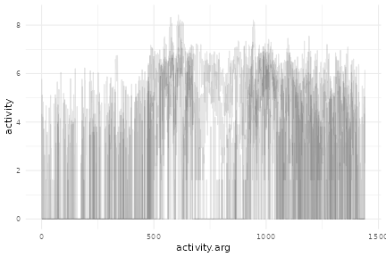
The tidyfun::dti_df contains fractional anisotropy (FA)
tract profiles for the corpus callosum (cca) and the right corticospinal
tract (rcst), along with several covariates.
data(dti_df)
dti_df
## # A tibble: 382 × 6
## id visit sex case cca
## <dbl> <int> <fct> <fct> <tfd_irreg>
## 1 1001 1 female control (0.000,0.49);(0.011,0.52);(0.022,0.54); ...
## 2 1002 1 female control (0.000,0.47);(0.011,0.49);(0.022,0.50); ...
## 3 1003 1 male control (0.000,0.50);(0.011,0.51);(0.022,0.54); ...
## 4 1004 1 male control (0.000,0.40);(0.011,0.42);(0.022,0.44); ...
## 5 1005 1 male control (0.000,0.40);(0.011,0.41);(0.022,0.40); ...
## 6 1006 1 male control (0.000,0.45);(0.011,0.45);(0.022,0.46); ...
## 7 1007 1 male control (0.000,0.55);(0.011,0.56);(0.022,0.56); ...
## 8 1008 1 male control (0.000,0.45);(0.011,0.48);(0.022,0.50); ...
## 9 1009 1 male control (0.000,0.50);(0.011,0.51);(0.022,0.52); ...
## 10 1010 1 male control (0.000,0.46);(0.011,0.47);(0.022,0.48); ...
## # ℹ 372 more rows
## # ℹ 1 more variable: rcst <tfd_irreg>A quick plot of the cca tract profiles is below.
dti_df |>
ggplot(aes(y = cca)) +
geom_spaghetti(alpha = 0.05)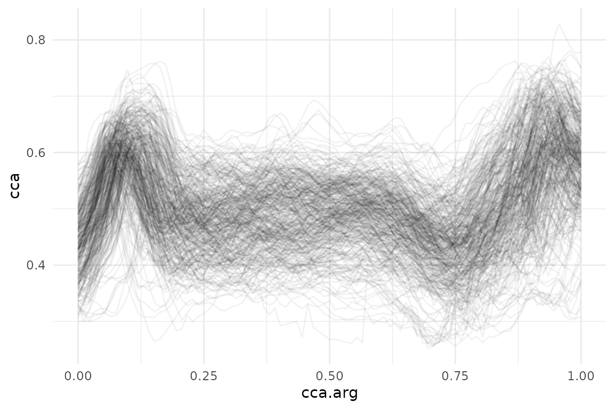
Existing tidyverse functions
Dataframes using tidyfun to store functional
observations can be manipulated using tools from dplyr,
including select and filter:
chf_df |>
select(id, day, activity) |>
filter(day == "Mon") |>
ggplot(aes(y = activity)) +
geom_spaghetti(alpha = 0.05)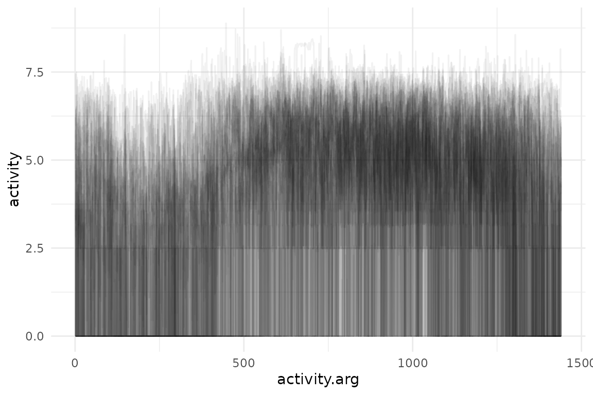
Operations using group_by and summarize
also work – let’s look at some daily averages of these activity
profiles:
chf_df |>
group_by(day) |>
summarize(mean_act = mean(activity)) |>
ggplot(aes(y = mean_act, color = day)) +
geom_spaghetti()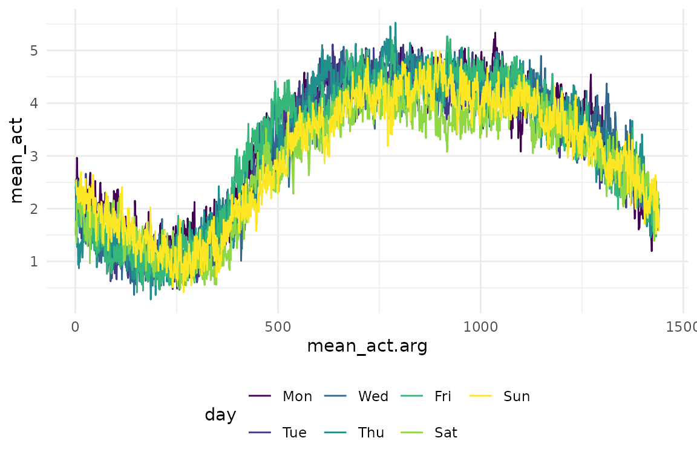
One can mutate functional observations – here we
exponentiate the log activity counts to obtain original recordings:
chf_df |>
slice(1:5) |>
mutate(exp_act = exp(activity)) |>
ggplot(aes(y = exp_act)) +
geom_spaghetti(alpha = 0.2)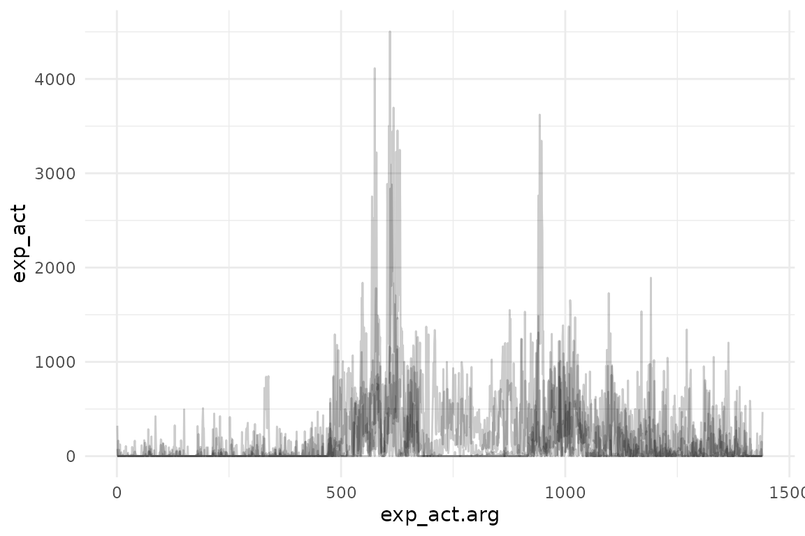
Functions for data manipulation from tidyr are also
supported. We illustrate by using pivot_wider to create new
tfd-columns containing the activity profiles for each day
of the week:
chf_df |>
select(id, day, activity) |>
pivot_wider(
names_from = day,
values_from = activity
)
## # A tibble: 47 × 8
## id Mon Tue
## <dbl> <tfd_reg> <tfd_reg>
## 1 1 ▁▂▁▁▁▁▁▁▂▃▅▅▁▁▁▂▃▅▅▂▂▂▃▃▂▁ ▁▁▁▁▁▃▂▁▂▁▄▄▄▆▅▆▅▄▆▅▅▅▂▃▄▂
## 2 3 ▆▅▄▅▄▄▅▄▄▄▆▅▃▅▅▆▅▅▅▅▄▅▅▄▅▅ ▂▁▂▁▁▁▁▄▂▁▁▂▆▆▅▅▄▅▆▇▇▆▅▄▄▅
## 3 4 ▃▂▂▂▁▁▁▁▆▅▃▆▆▆▆▆▅▅▆▆▆▅▅▅▄▁ ▁▂▁▁▁▁▃▁▄▆▅▆▆▅▆▅▄▅▅▅▅▄▄▄▄▄
## 4 5 ▆▆▆▅▅▅▅▅▅▅▆▆▅▆▆▆▅▅▅▅▆▅▆▇▇▇ ▅▅▅▆▅▅▆▅▆▇▇▆▇▇▇▇▆▆▆▆▆▆▆▆▆▅
## 5 6 ▁▁▁▁▁▁▁▄▅▅▄▅▃▁▁▂▅▄▅▅▅▄▅▃▂▁ ▁▁▁▁▁▁▁▄▆▅▄▅▃▄▅▅▄▅▅▄▅▄▃▃▁▁
## 6 7 ▁▁▁▁▃▁▂▂▁▃▃▄▅▆▅▅▅▅▅▃▄▆▅▅▅▅ ▄▂▂▄▁▁▂▁▁▄▄▅▅▅▅▅▄▆▄▅▄▄▄▅▅▄
## 7 8 ▁▁▁▁▁▁▁▁▁▁▆▆▁▄▅▆▆▆▆▇▆▄▂▃▁▁ ▁▁▁▁▁▁▁▂▃▅▅▅▄▆▄▆▆▆▅▁▁▁▁▁▁▁
## 8 9 ▁▂▁▁▁▁▁▁▁▁▄▂▃▄▄▃▄▄▂▂▃▃▄▃▂▃ ▁▁▂▁▁▁▁▁▁▁▁▄▃▃▃▂▃▁▃▃▄▃▃▃▃▁
## 9 10 ▁▁▁▁▁▄▂▄▆▄▃▃▅▂▅▄▄▅▅▄▃▁▃▂▁▁ ▁▁▁▂▂▄▅▄▇▇▇▇▆▇▆▆▆▅▅▅▄▃▄▂▂▁
## 10 11 ▁▁▁▂▁▃▁▁▃▅▅▃▄▆▅▅▅▄▆▅▆▅▆▆▆▂ ▁▁▁▁▄▃▂▁▄▆▄▅▆▃▄▃▅▆▅▅▅▅▆▁▁▂
## # ℹ 37 more rows
## # ℹ 5 more variables: Wed <tfd_reg>, Thu <tfd_reg>, Fri <tfd_reg>,
## # Sat <tfd_reg>, Sun <tfd_reg>(Note that this has made the data less “tidy” and is therefore not generally recommended, but may be useful in some cases).
It’s also possible to join datasets based on non-functional keys. To illustrate, we’ll first create a pair of datasets:
monday_df <- chf_df |>
filter(day == "Mon") |>
select(id, monday_act = activity)
friday_df <- chf_df |>
filter(day == "Fri") |>
select(id, friday_act = activity)These can be joined using the id variable as a key (and
then tidied using pivot_longer):
monday_df |>
left_join(friday_df, by = "id") |>
pivot_longer(monday_act:friday_act, names_to = "day", values_to = "activity")
## # A tibble: 94 × 3
## id day activity
## <dbl> <chr> <tfd_reg>
## 1 1 monday_act ▁▂▁▁▁▁▁▁▂▃▅▅▁▁▁▂▃▅▅▂▂▂▃▃▂▁
## 2 1 friday_act ▁▁▁▂▂▁▁▂▃▄▆▅▂▁▁▁▂▅▅▄▃▃▂▂▂▁
## 3 3 monday_act ▆▅▄▅▄▄▅▄▄▄▆▅▃▅▅▆▅▅▅▅▄▅▅▄▅▅
## 4 3 friday_act ▅▅▃▃▃▃▃▄▄▄▄▆▆▅▅▆▆▆▆▆▅▅▅▆▆▅
## 5 4 monday_act ▃▂▂▂▁▁▁▁▆▅▃▆▆▆▆▆▅▅▆▆▆▅▅▅▄▁
## 6 4 friday_act ▂▂▂▁▁▂▂▄▃▁▁▃▅▅▅▅▄▄▆▆▅▁▁▁▁▅
## 7 5 monday_act ▆▆▆▅▅▅▅▅▅▅▆▆▅▆▆▆▅▅▅▅▆▅▆▇▇▇
## 8 5 friday_act ▆▆▆▅▅▆▆▆▆▆▇▆▆▆▆▆▅▆▆▆▆▅▅▅▆▆
## 9 6 monday_act ▁▁▁▁▁▁▁▄▅▅▄▅▃▁▁▂▅▄▅▅▅▄▅▃▂▁
## 10 6 friday_act ▁▁▁▁▁▁▂▄▆▆▃▃▂▅▅▄▃▄▄▅▄▃▄▃▁▁
## # ℹ 84 more rowsSimilar tidying can be done for the DTI data – let’s look at average RCST tract values for gender and case status:
dti_df |>
group_by(case, sex) |>
summarize(mean_rcst = mean(rcst, na.rm = TRUE)) |>
ggplot(aes(y = mean_rcst, color = case)) +
geom_spaghetti(linewidth = 2) +
facet_grid(~sex)
## `summarise()` has regrouped the output.
## ℹ Summaries were computed grouped by case and sex.
## ℹ Output is grouped by case.
## ℹ Use `summarise(.groups = "drop_last")` to silence this message.
## ℹ Use `summarise(.by = c(case, sex))` for per-operation grouping
## (`?dplyr::dplyr_by`) instead.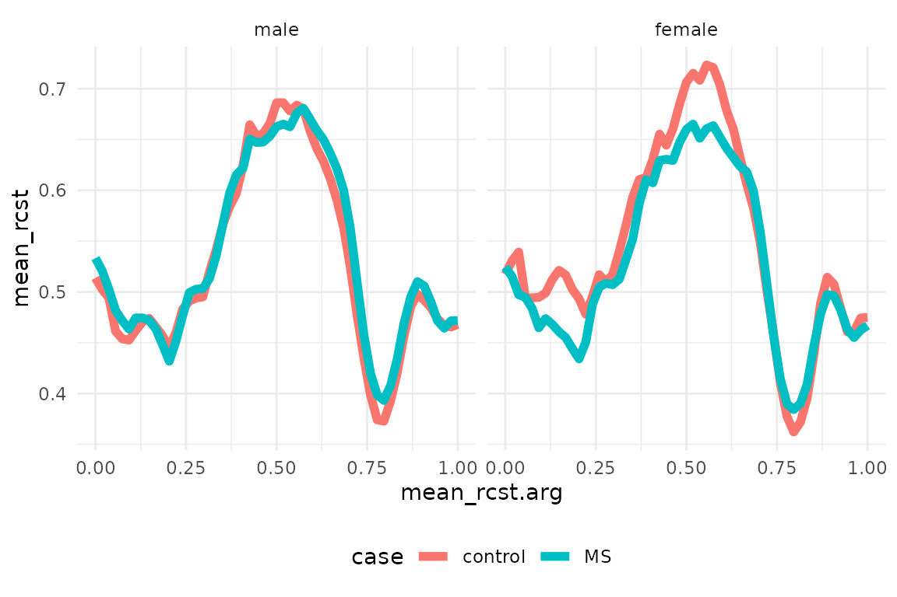
New tidyfun functions
Some dplyr functions are useful in conjunction with new
functions in tidyfun. For example, one might use
filter with tf_anywhere to filter based on the
values of observed functions:
like_to_move_it_move_it <- chf_df |> filter(tf_anywhere(activity, value > 9))
glimpse(like_to_move_it_move_it)
## Rows: 6
## Columns: 8
## $ id <dbl> 34, 34, 34, 35, 35, 35
## $ gender <chr> "Female", "Female", "Female", "Female", "Female", "Female"
## $ age <dbl> 56, 56, 56, 67, 67, 67
## $ bmi <dbl> 25, 25, 25, 33, 33, 33
## $ event_week <dbl> 40, 40, 40, 47, 47, 47
## $ event_type <chr> ".", ".", ".", ".", ".", "."
## $ day <ord> Wed, Thu, Sun, Thu, Fri, Sat
## $ activity <tfd_reg> ▂▄▆▅▆▅▄▃, ▁▁▅▆▅▄▄▁, ▂▂▄▅▅▄▄▃, ▂▁▃▅▅▄▅▄, ▃▁▃▄▅▅▄▅, ▃▁▁▄▅▄▄▄…
like_to_move_it_move_it |>
ggplot(aes(y = activity)) +
geom_spaghetti(aes(colour = id))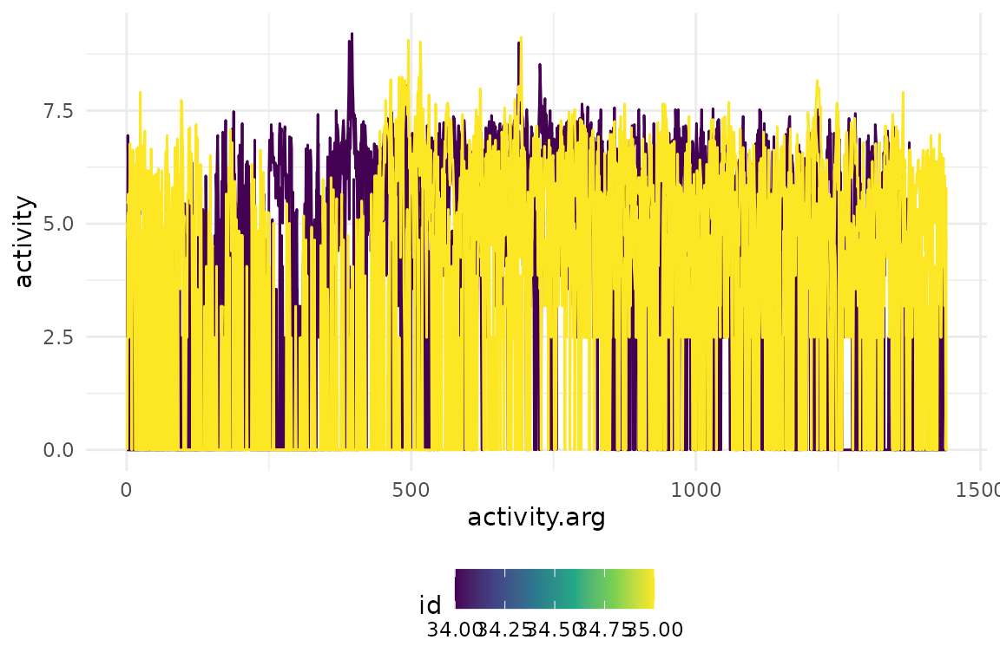
A second example of this functionality in the DTI data is below.
dti_df |>
filter(tf_anywhere(cca, value < 0.26)) |>
ggplot(aes(y = cca)) +
geom_spaghetti()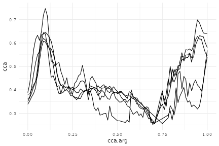
The existing mutate function can be combined with
several tidyfun functions, including
tf_smooth, tf_zoom, and
tf_derive.
One can smooth existing observations using
tf_smooth:
chf_df |>
filter(id == 1) |>
mutate(smooth_act = tf_smooth(activity)) |>
ggplot(aes(y = smooth_act)) +
geom_spaghetti()
## Using `f = 0.15` as smoother span for `lowess()`.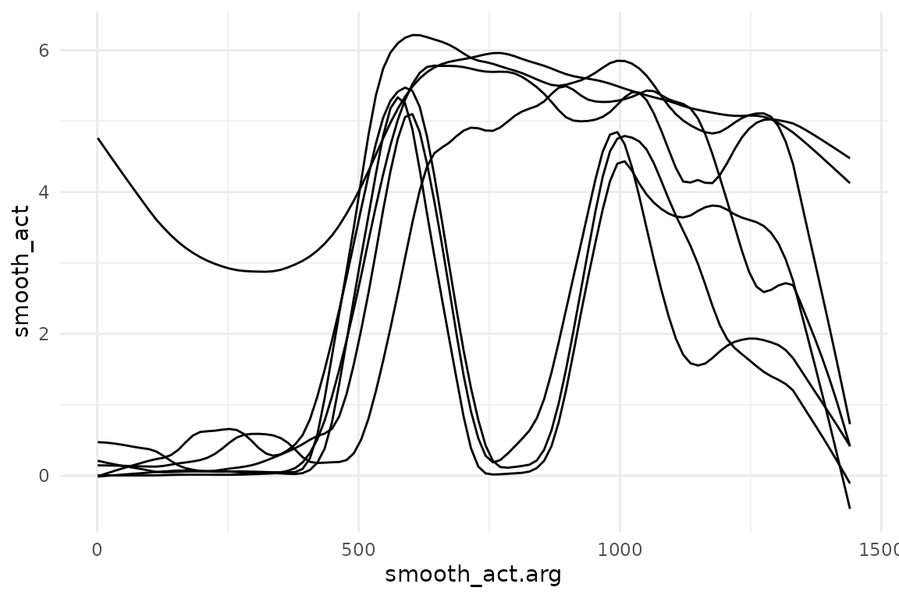
This can be combined with previous steps, like group_by
and summarize, to build intuition through descriptive plots
and summaries:
chf_df |>
group_by(day) |>
summarize(mean_act = mean(activity)) |>
mutate(smooth_mean = tf_smooth(mean_act)) |>
ggplot(aes(y = mean_act, color = day)) +
geom_spaghetti(alpha = 0.2) +
geom_spaghetti(aes(y = smooth_mean), linewidth = 2)
## Using `f = 0.15` as smoother span for `lowess()`.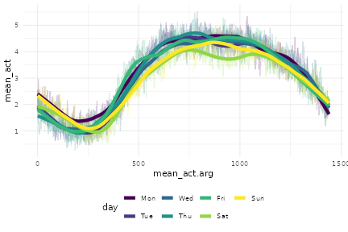
One can also extract observations over a subset of the full domain
using tf_zoom:
chf_df |>
filter(id == 1) |>
mutate(daytime_act = tf_zoom(activity, 360, 1200)) |>
ggplot(aes(y = daytime_act)) +
geom_spaghetti(alpha = 0.2)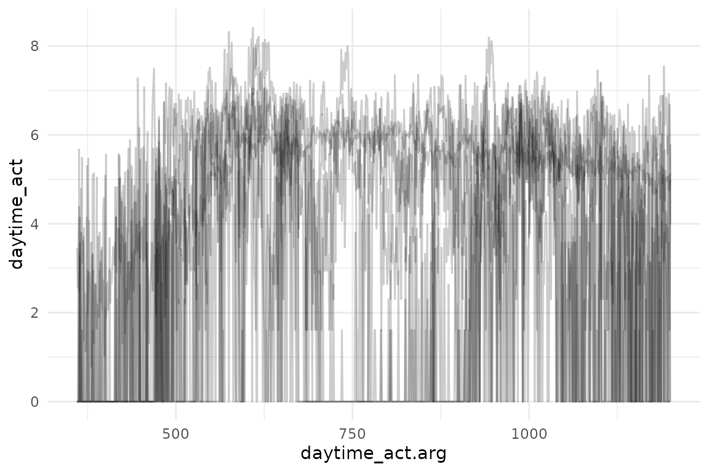
We can also convert from tfd to tfb inside
a mutate statement as part of a data processing
pipeline:
dti_df <- dti_df |> mutate(cca_tfb = tfb(cca, k = 25))
## Percentage of input data variability preserved in basis representation
## (per functional observation, approximate):
## Min. 1st Qu. Median Mean 3rd Qu. Max.
## 88.3 96.7 97.7 97.3 98.3 99.4It’s also possible to compute derivatives as part of a processing pipeline:
dti_df |>
slice(1:10) |>
mutate(
cca_raw_deriv = tf_derive(cca),
cca_tfb_deriv = tf_derive(cca_tfb)
) |>
ggplot() +
geom_spaghetti(aes(y = cca_raw_deriv), alpha = 0.3, linewidth = 0.3, col = "blue") +
geom_spaghetti(aes(y = cca_tfb_deriv), alpha = 0.3, linewidth = 0.3, col = "red") +
ylab("d/dt f(t)")
## ✖ Differentiating over irregular grids can be unstable.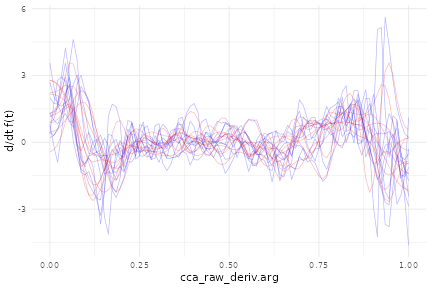
Working with data.table
tidyfun functional data objects work within
data.table as well.
However, there is one specific known caveat when calculating the mean
of a tf vector within a data.table context: By
default, data.table will use optimized routines for summary
statistics, which may cause mean to dispatch to
data.table’s own optimized implementation, leading to
unexpected behavior for tf vectors.
To ensure the correct mean calculation for tf vectors,
there are two solutions:
- Set
options(data.table.optimize = 0), which disables optimization, allowing the mean function to correctly dispatch fortfvectors. - Alternatively, explicitly call
tf:::mean.tf(activity)in your code to directly specify the correcttf-mean calculation.
This caveat applies specifically to mean() and is the
only known issue.